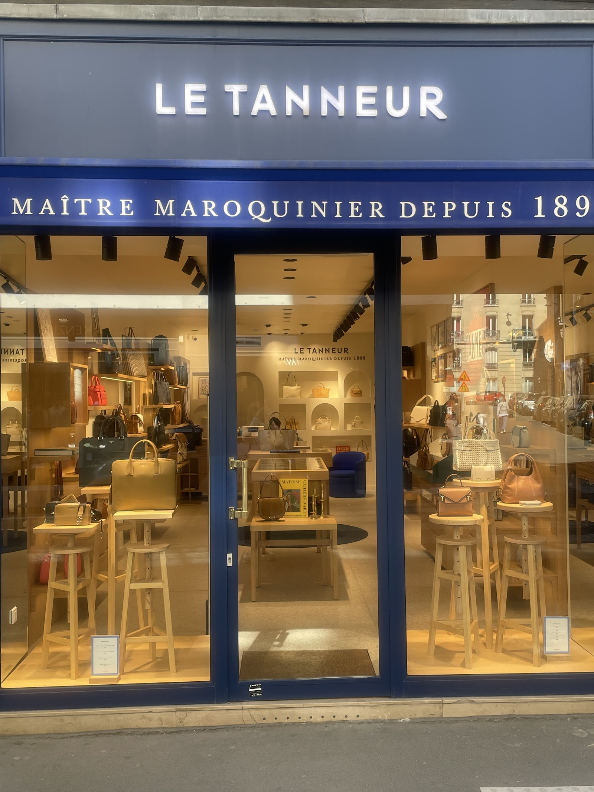

Passy, cuir, silence.
Depuis 1898, Le Tanneur travaille la matière là où elle se touche, se sent, se choisit. Notre boutique du 16ᵉ est ouverte — venez.
Voir l'itinéraire
Le 13, rue de Passy
Une devanture sobre, une sonnette, et une porte qui s'ouvre sur l'un des derniers repaires de maroquinerie française du 16ᵉ arrondissement. Ici, chaque sac a une histoire de cuir et de geste. La boutique est tenue par des gens qui connaissent la matière.
Adresse
13 Rue de Passy
75016 Paris
France
Téléphone
Horaires d'ouverture
Lundi – Samedi : 10h00 – 19h00
Dimanche : fermé
Horaires indicatifs — nous vous invitons à appeler pour confirmer avant votre visite.
Métro : Passy (ligne 6) à 3 minutes · La Muette (ligne 9) à 6 minutes.
Parking public : Passy-La Muette à 250 m.
Cuir pleine fleur,
tannage végétal,
couture sellier
Les mots ont un sens quand on travaille le cuir depuis plus d'un siècle. Grain naturel, patine unique, finitions à la main : nous vous expliquons comment reconnaître un beau cuir et pourquoi il se bonifie avec les années.
Le cuir pleine fleur n'est pas une expression marketing : c'est la partie la plus noble de la peau, celle qui n'a pas été poncée, qui respire et développe une patine personnelle au fil du temps. Le tannage végétal, plus lent et plus exigeant que le tannage au chrome, respecte la fibre et donne au cuir sa tenue et son odeur caractéristiques.
Natures mortes de cuirs coupés, d'outils de sellier, de surpiqûres contrastées — visibles en boutique.
Prenez le temps d'essayer
Un sac se choisit à l'épaule, se pèse à la main, s'ouvre et se ferme. Nous vous recevons sur rendez-vous — ou à l'improviste — pour vous conseiller, sans hâte. Retrait en magasin offert pour toute commande, et personnalisation possible sur place.
Appelez-nous directement au 01 42 88 75 87 ou remplissez le formulaire ci-contre. Nous vous répondons dans la journée.
Nos signatures
Chaque ligne a sa personnalité, son cuir, sa façon de se porter. Venez les essayer en boutique — les images ne remplacent pas le geste.
Émilie
Le sac porté-épaule qui a fait la réputation de la maison. Ligne épurée, cuir souple qui se patine avec élégance. Format idéal pour la journée.
Félicie
Une besace d'inspiration sellier, avec sa boucle signature en laiton. Porté croisé ou à l'épaule, il s'affine avec les années et prend une patine unique.
Hortense
Le cabas structuré, conçu pour durer. Coutures sellier apparentes, doublure en coton épais, anses renforcées. Un sac de tous les jours qui ne se démode pas.
Geste et transmission
Depuis la fondation en 1898, nos artisans travaillent le cuir avec des techniques héritées des tanneurs et des selliers. La boutique de Passy témoigne de ce savoir-faire : demandez à voir l'intérieur d'un sac, une couture, une doublure — tout se montre.
Chaque pièce est le résultat d'un geste précis, d'une connaissance intime de la matière. Les coutures sellier, réalisées au point sellier manuel, sont reconnaissables à leur régularité et à leur solidité : elles ne se défont pas, même si un point cède.
Portrait d'un artisan au travail — disponible à la boutique.
Ce que disent les gens du quartier
Note globale 4.5★ sur 5 — 38 avis Google. Lire tous les avis sur Google Maps
« Une boutique magnifique, un accueil rare. On prend le temps, on touche les cuirs, on pose des questions — et on repart avec un sac qui a du sens. »
« Rue de Passy, une adresse discrète mais en or. Le conseil est précis, pas de pression. J'ai fait personnaliser un portefeuille, résultat impeccable. »
« Très belle sélection de cuirs. J'aurais aimé un peu plus de choix en petite maroquinerie, mais la qualité est indéniable et l'équipe charmante. »